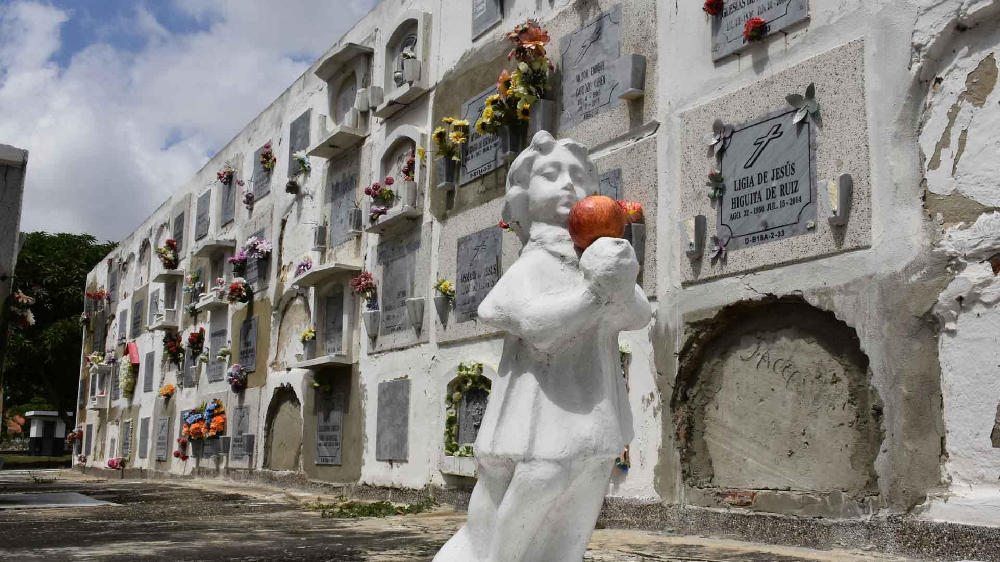

Cementerio Calancala de Barranquilla
Lugares Misteriosos / Sitios históricos y paranormales

La historia
En el suroccidente de Barranquilla se encuentra uno de los camposantos más antiguos y representativos de la ciudad: el Cementerio Católico Calancala. Sus muros, mausoleos, lápidas y pasillos guardan más de un siglo de historias relacionadas con las familias, las tradiciones religiosas y la evolución de la sociedad barranquillera. Es un lugar donde el pasado permanece presente a través de los recuerdos de quienes descansan entre sus monumentos.
Sus orígenes se remontan a comienzos del siglo XX, cuando un grupo de ciudadanos promovió la construcción de un cementerio destinado a la comunidad católica de Barranquilla. La iniciativa recibió el respaldo de las autoridades eclesiásticas de la época y contó con un terreno donado por los herederos de Manuel María Bula, ubicado en el antiguo camino hacia Juan Mina. El proyecto dio origen a un espacio que se convertiría en parte importante de la historia religiosa y funeraria de la ciudad.
El Cementerio Calancala fue inaugurado el 24 de octubre de 1915, fecha en la que se realizó su primer entierro: el de Sabina Atilano, una mujer originaria de Baranoa. Con el paso de los años, su tumba adquirió un significado especial dentro de la religiosidad popular. Algunas personas comenzaron a visitarla para pedir favores y agradecer supuestas intercesiones, convirtiéndola en una de las figuras más recordadas del camposanto.
Su arquitectura también forma parte de su atractivo. Entre sus espacios se encuentran antiguas tumbas, monumentos funerarios, mausoleos familiares y una capilla conocida como Cristo Redentor. Estos elementos reflejan las costumbres religiosas y las formas de recordar a los difuntos que han acompañado a distintas generaciones de barranquilleros.
Entre la devoción y el misterio
Como ocurre en muchos cementerios tradicionales, Calancala está rodeado de relatos populares sobre experiencias inexplicables, prácticas relacionadas con la brujería y creencias espirituales vinculadas a los difuntos. Algunas de estas historias han sido recogidas en testimonios de personas que trabajan o visitan el lugar. La combinación de antiguas sepulturas, tradiciones religiosas y creencias populares ha contribuido a construir una atmósfera de misterio alrededor del cementerio.
Uno de los relatos más conocidos está relacionado con Sabina Atilano, cuya tumba recibe visitas de personas que le atribuyen favores y milagros. Estas manifestaciones de fe hacen parte de la religiosidad popular y de las tradiciones que permanecen vivas entre algunos habitantes de Barranquilla y sus alrededores.
Un lugar que guarda historias sin resolver
Más allá de las leyendas y las creencias populares, Calancala también conserva una historia profundamente humana. Durante años, en sus instalaciones funcionó una morgue del Instituto Nacional de Medicina Legal, a donde fueron trasladados cuerpos de personas que no pudieron ser identificadas. Algunos estaban relacionados con hechos de violencia y con el conflicto armado en la región Caribe.
En septiembre de 2024, la Unidad de Búsqueda de Personas dadas por Desaparecidas inició intervenciones forenses en el cementerio para localizar y recuperar cuerpos que podrían corresponder a personas desaparecidas. En octubre de 2026, la entidad informó sobre una nueva recuperación de diez cuerpos, que se sumaron a las intervenciones anteriores. Este trabajo representa una oportunidad para reconstruir historias interrumpidas y ayudar a numerosas familias a encontrar respuestas.
Actualmente, el Cementerio Calancala representa mucho más que un lugar de descanso. Es un espacio donde convergen la historia religiosa, la memoria de Barranquilla, las tradiciones populares y la búsqueda de respuestas sobre acontecimientos del pasado. Sus caminos invitan a descubrir una parte de la ciudad que pocas veces se cuenta: aquella que permanece entre sus tumbas, sus monumentos y las historias de quienes aún esperan ser recordados.
Fuentes
Conferencia Episcopal de Colombia. (2015). Cien años del cementerio católico Calancala.
Consultar fuenteLa Cháchara. (2022). Santidad y brujería, juntas pero no revueltas en los cementerios Calancala y Universal.
Consultar relatoUnidad de Búsqueda de Personas dadas por Desaparecidas. (2024). La Unidad de Búsqueda inició intervención del Cementerio Calancala de Barranquilla.
Consultar investigaciónUnidad de Búsqueda de Personas dadas por Desaparecidas. (2026). La Unidad de Búsqueda recupera 10 cuerpos en el Cementerio Católico Calancala de Barranquilla.
Consultar investigación